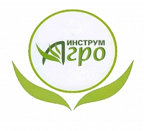

MITEX 2026 · Россия · Стенд 8С801
ИНСТРУМ-АГРО, ООО
Карточка проверена 10 ноября 2026, 09:25 · Источник ↗ · Снимок оригинальной карточки ↗
О компании
Наша фирма является крупным производителем садово-огородного, хозяйственного и снегоуборочного инструмента уже более 10 лет. В ассортимент каталога входит более 2500 наименований. Отгрузки производятся только оптом по всей Российской Федерации, РБ и Казахстану.
Контакты
Все контактные сведения из карточки
Контакты Юридический адрес Телефон: +78317122597 E-mail: a.ch@inbox.ru Адрес: 606100, Россия, Нижегородская область, Павлово, улица Чкалова, 57/1 Веб-сайт: https://www.iagro.ru E-mail: info@iagro.ru Телефон: +7 (83171) 22-597
Ранее найденные соцсети — октябрь 2026
Эти ссылки найдены при предыдущем обходе сайтов компаний. Актуальность контактов уточняйте у участника.
Все рубрики участника
Mitex - Рубрикатор
- 2. Садовая техника, инструмент, инвентарь, оборудование, расходные материалы и насосы
Зал
- Зал № 8
Участник выставки
- MITEX
Видео, каталоги и документы
В доступной карточке нет видео или документов. Смотрите сайт участника.